Tiny Go HTTP service · multi-stage container · Helm chart on minikube ·
GitHub Actions CI with cosign + SBOM + Trivy · Prometheus / Grafana ·
public URL via EC2 + Elastic IP.
A reproducible production-style slice — no application complexity, all the DevOps surface.
A tiny Go HTTP service exposing four endpoints — /ping, /healthz, /version, and /metrics — packaged in a multi-stage distroless non-root container, deployed to single-node minikube via a Helm chart, served publicly through an Elastic IP-bound EC2 instance in eu-north-1. A GitHub Actions pipeline lints, tests, scans, signs, and attests every image before it lands on GHCR, and rolls the new revision onto the live cluster through SSM Run-Command — no SSH key ever leaves the workflow.
Every directory has a single purpose; cross-references are explicit.
. ├── main.go service · routes · middleware · graceful shutdown ├── Dockerfile multi-stage → distroless static:nonroot · ~15 MB ├── Makefile build · test · docker · demo · diagrams · sign-verify ├── charts/ app chart (helm-create lineage) + policies/ (Kyverno) ├── .github/workflows/ 7-job CI pipeline (see §9) ├── terraform/ EC2 + EIP + SG + OIDC role (local state) ├── scripts/ bootstrap-ec2.sh: docker, minikube, helm, kyverno, app ├── dashboards/ Grafana JSON dashboard └── docs/ 3 ADRs · architecture.md · diagrams · WORKFLOW · CHECKLIST
Physical placement: where each component runs.
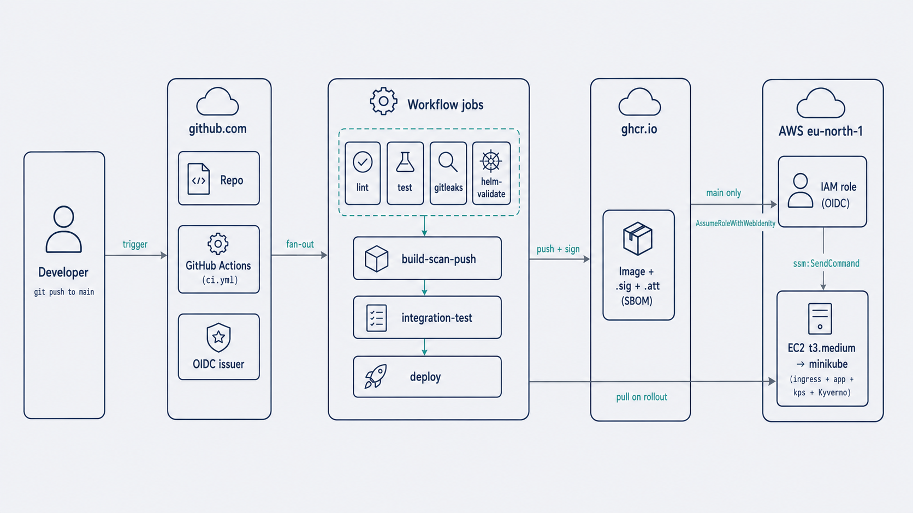
Figure 1. Code → CI → signed image → live cluster; no SSH, no long-lived secrets.
What runs inside the minikube cluster, and how traffic + telemetry flow.
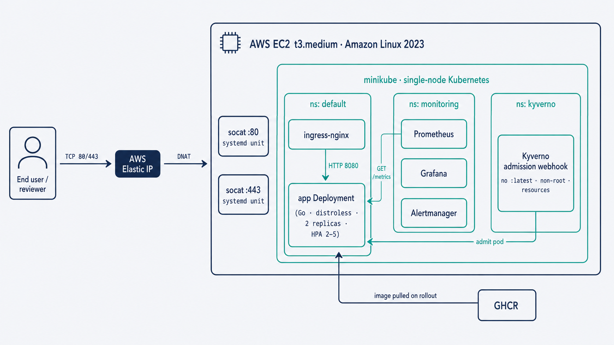
Figure 2. App + observability + policy — each in its own namespace, single cluster.
Who interacts with the system, across which trust boundaries.
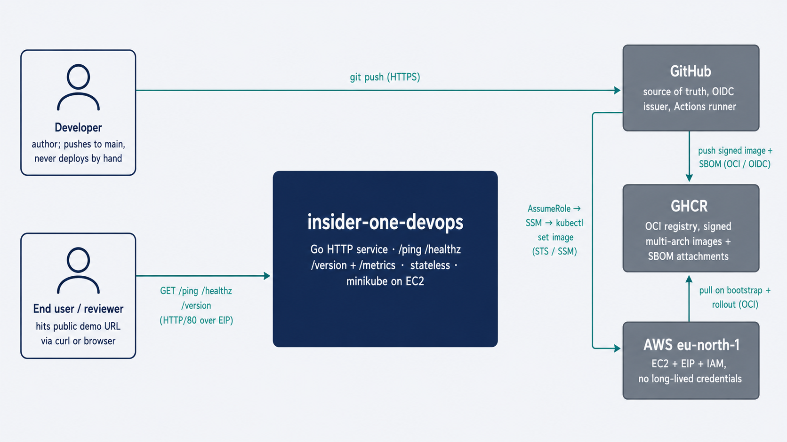
Figure 3. Two people, four external systems, one box of code.
stdlib net/http · no framework, no DI, no codegen.
| path | status | body |
|---|---|---|
| /ping | 200 | pong |
| /healthz | 200 / 503 | {"status":"ok|draining"} |
| /version | 200 | {"sha":..,"build_time":..} |
| /metrics | 200 | text/plain; v=0.0.4 |
Test coverage maps 1:1 to FR/AC IDs in SPEC.md (see main_test.go).
Curl against the public Elastic IP — 200 on all four endpoints.
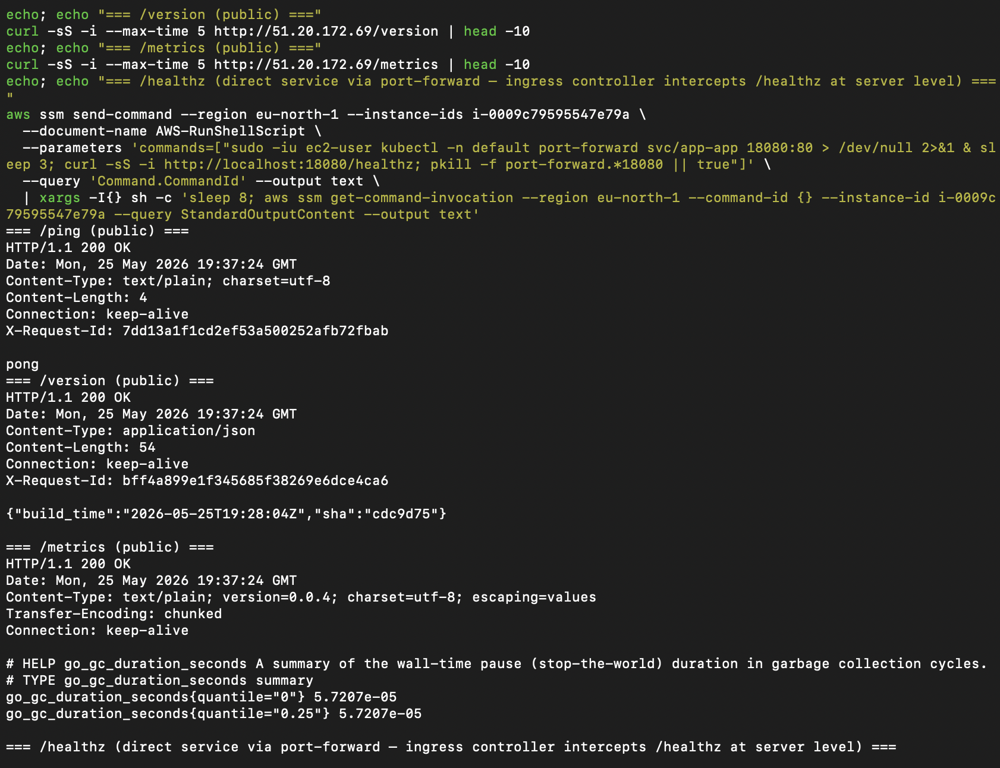
Multi-stage · cross-compile · distroless · nonroot.
FROM --platform=$BUILDPLATFORM \
golang:1.25-alpine AS builder
WORKDIR /src
COPY go.mod go.sum ./
RUN go mod download
COPY . .
ARG TARGETOS=linux TARGETARCH=amd64
ENV CGO_ENABLED=0
RUN GOOS=$TARGETOS GOARCH=$TARGETARCH \
go build -trimpath \
-ldflags "-s -w \
-X main.buildSHA=$BUILD_SHA \
-X main.buildTime=$BUILD_TIME" \
-o /out/app ./
FROM gcr.io/distroless/static-debian12:nonroot
COPY --from=builder /out/app /app
USER nonroot:nonroot
ENTRYPOINT ["/app"]charts/app/ · helm-create lineage · rendered as one bundle per overlay.
| key | dev | prod |
|---|---|---|
| replicaCount | 1 | 2 |
| resources.req.cpu | 25m | 100m |
| resources.req.mem | 32Mi | 128Mi |
| resources.lim.cpu | 100m | 500m |
| resources.lim.mem | 64Mi | 256Mi |
| ingress.host | app.dev.local | "" (catch-all) |
| serviceMonitor | — | enabled |
| autoscaling | — | 2–5 @ CPU 60% |
| networkPolicy | — | default-deny |
Helm-rendered objects + chart tests + rollout history, executed via SSM.
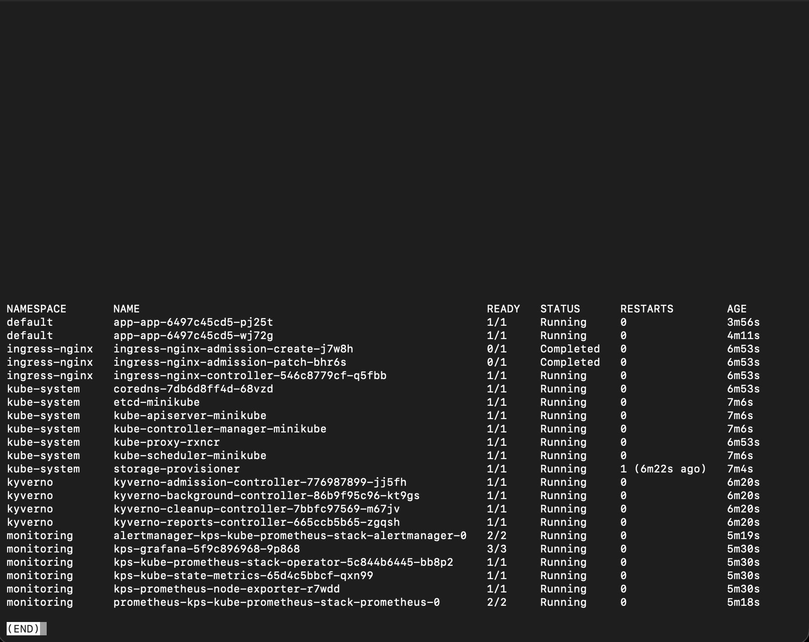
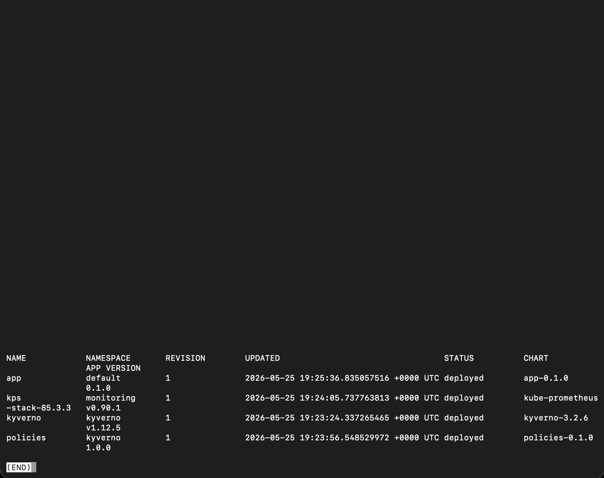
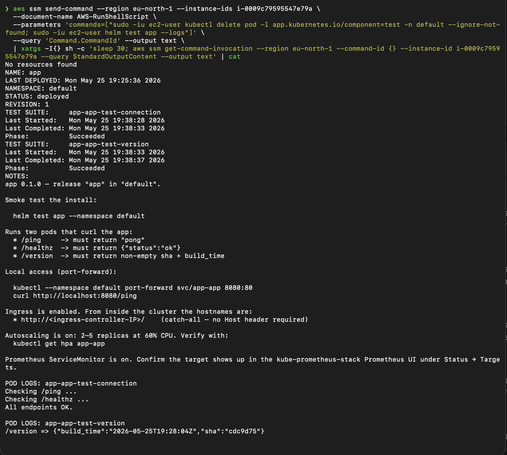
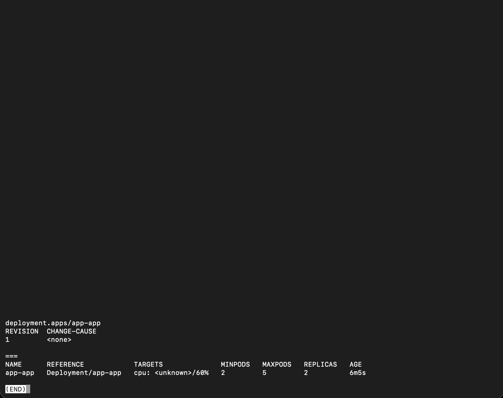
Seven jobs gated by branch protection · push to main = green pipeline + signed image + live rollout.
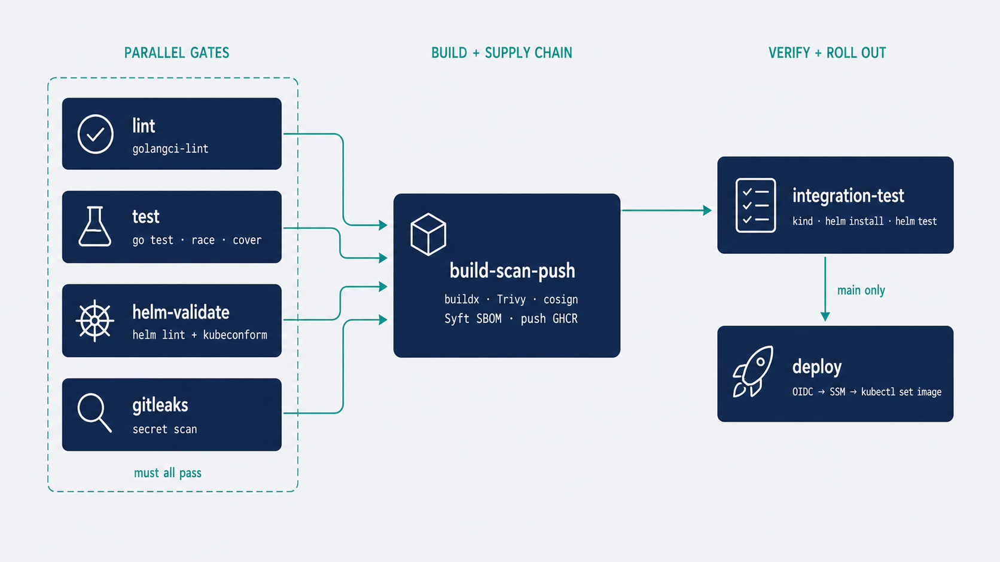
Figure 4. Last green run on main — full pipeline target NFR-9 < 8 min.
Each job owns a single concern and reports its own status to branch protection.
| job | needs | what it does |
|---|---|---|
| lint | — | golangci-lint v1.62 (govet · staticcheck · errcheck · gosec) |
| test | — | go test ./… -race -cover -count=1 |
| helm-validate | — | helm lint (dev + prod) · helm template | kubeconform 1.30 |
| gitleaks | — | full-history secret scan + custom .gitleaks.toml rule |
| build-scan-push | lint, test, helm-validate, gitleaks | buildx · Trivy SARIF (gate on CRITICAL/HIGH) · cosign keyless · Syft SBOM · push GHCR |
| integration-test | build-scan-push | pull image · kind cluster · helm install · curl /ping /healthz /version · helm test |
| deploy | build-scan-push, integration-test | AWS OIDC AssumeRole → SSM Run-Command → kubectl set image + rollout status |
Latest run on main · all seven jobs green · SARIF findings in Security tab.
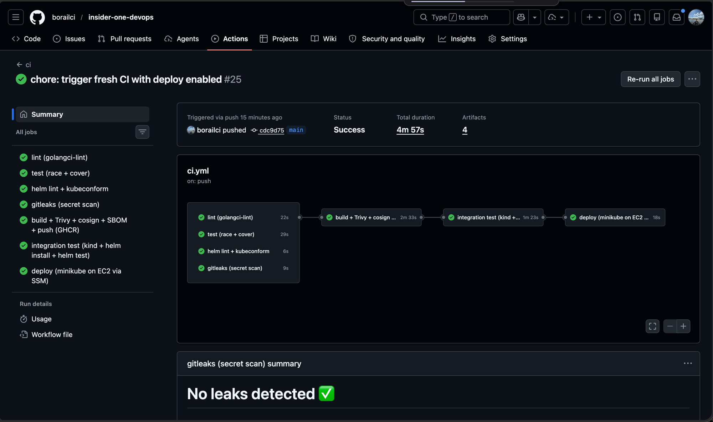
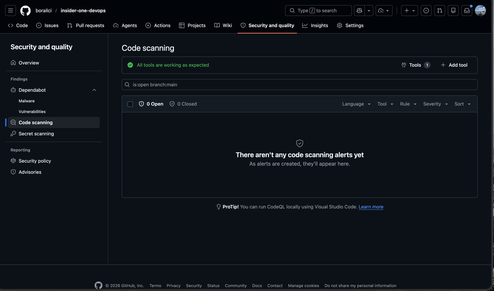
Last green run on main · full pipeline target NFR-9 < 8 min.
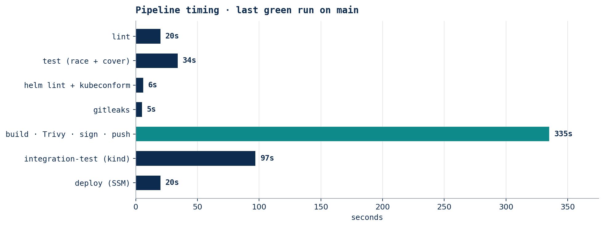
After 2026-05-19 optimisations: cross-compile saves ~4 min on build · single Trivy pass saves 5–7 s · integration pulls instead of rebuilds (–30 s on main).
Every image on GHCR is signed, attested, and reproducible.
| artifact | where | what |
|---|---|---|
| ghcr.io/borailci/insider-one-devops:<sha> | GHCR · per-commit | Multi-arch (amd64 + arm64) OCI manifest list. |
| ghcr.io/.../insider-one-devops:latest | GHCR · main only | Convenience tag pointing at most recent main build. |
| <digest>.sig | GHCR · alongside image | cosign keyless signature (Fulcio cert + Rekor entry). |
| <digest>.att | GHCR · alongside image | Syft CycloneDX SBOM as cosign attestation. |
| trivy-results.sarif | Security tab | Trivy SARIF — CVEs as first-class findings (when repo is public). |
cosign verify ghcr.io/borailci/insider-one-devops@<digest> --certificate-identity-regexp '...workflows/ci.yml@.*' --certificate-oidc-issuer https://token.actions.githubusercontent.comKeyless cosign + SBOM attestation verified end-to-end from a public client.
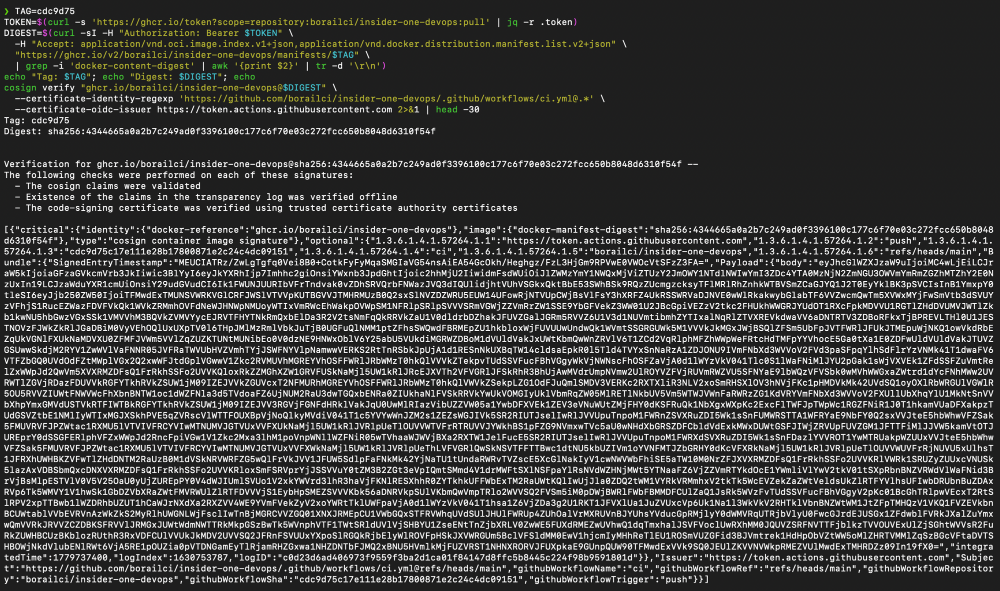
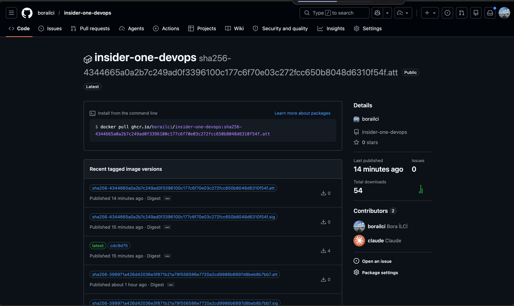
Single Terraform stack in eu-north-1 · destroy-when-idle · no SSH key in CI.
| component | value |
|---|---|
| region | eu-north-1 (Stockholm) |
| instance type | t3.medium (2 vCPU · 4 GiB) |
| AMI | Amazon Linux 2023 (latest) |
| root volume | 20 GiB gp3 |
| public IPv4 | 1 × Elastic IP (attached) |
| security group | 80/443 world · 22 narrowed |
| instance profile | AmazonSSMManagedInstanceCore |
| cluster | minikube · k8s 1.30 · ingress addon |
| operator access | SSM Run-Command only (no SSH) |
| instance | $/hr | $/mo |
|---|---|---|
| t3.medium (default) | $0.051 | ~$36.60 |
| t3.small | $0.030 | ~$21.30 |
| t3.micro | $0.019 | ~$13.40 |
No free tier on AWS account 057548897384 — every EC2 hour is billable. terraform destroy after every demo.
kube-prometheus-stack via Helm · ServiceMonitor scrapes /metrics · PrometheusRule fires alerts · Grafana visualises.
Live Grafana dashboard + Prometheus alert rules behind SSM port-forward.
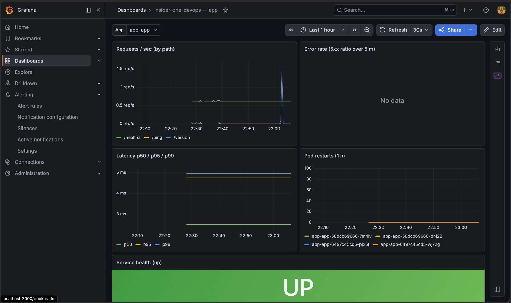
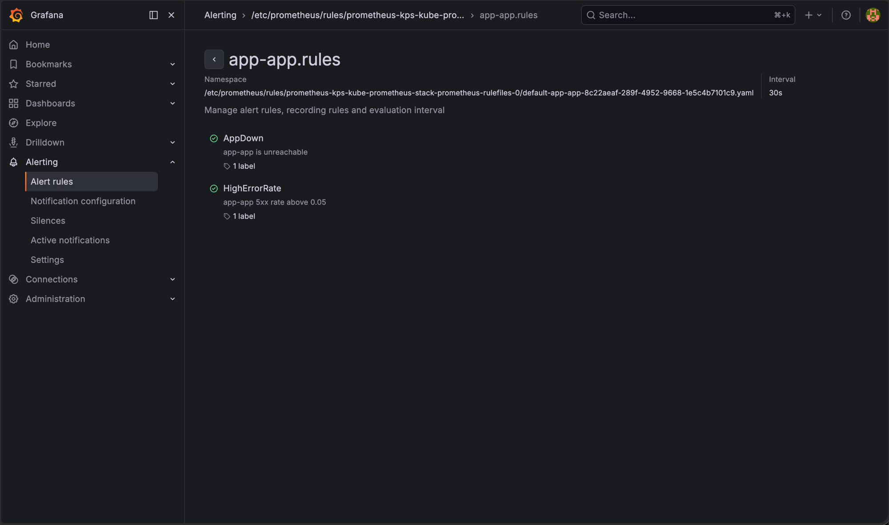
Kyverno installed cluster-wide BEFORE any workload — admission is the gate, not docs.
| policy | rule |
|---|---|
| disallow-latest-tag | Reject :latest image tags. Every image pinned to digest or SHA. |
| require-non-root | runAsNonRoot must be true. UID 0 cannot exec inside the cluster. |
| require-resources | Every container must declare CPU + memory requests and limits. |
$ kubectl run nginx-bad --image=nginx:latest --restart=Never
Error: admission webhook "validate.kyverno.svc-fail" denied the request — 3 policy violations:
· disallow-latest-tag · require-non-root · require-resourcesAdmission webhook blocks a deliberately bad pod — three policies fire at once.
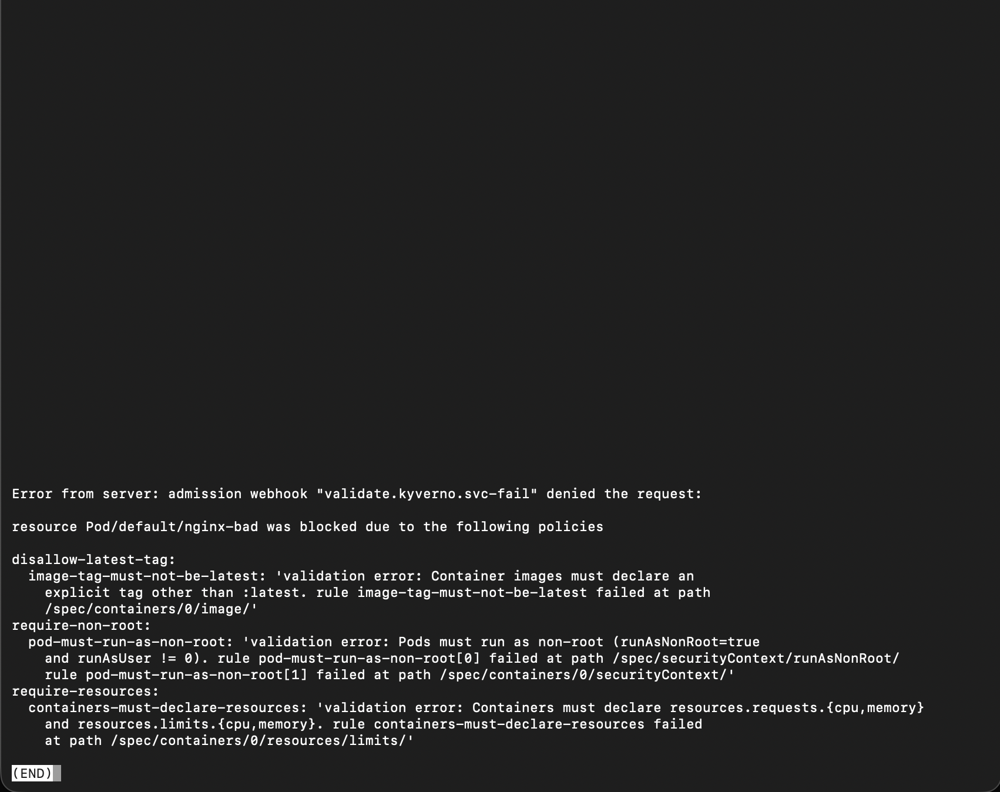
Each locked-in decision is committed as an ADR — these are the headlines.
Picked Track A (Minikube on EC2 + EIP) because Terraform + AWS OIDC give higher-signal DevOps evidence than a cloudflared / ngrok tunnel demo. Trade-off paid: hourly cost on a non-free-tier account → destroy-when-idle posture.
Picked Go because distroless static produces a non-root image under 15 MB, first-class Prometheus client, zero runtime dependencies. Stdlib net/http removes a whole class of CVE surface a framework would have added.
Picked direct rollout over ArgoCD/Flux because the case-study target is a single cluster — GitOps wins on N>1 clusters. SSM keeps port 22 closed and audits every operator command in CloudTrail under the OIDC role.
Every failure mode hit during the build · what fixed it · what it taught us.
{{- if X -}} stripped the newline before apiVersion: when a comment preceded it. kubeconform reported "missing apiVersion" for 5 conditional templates. Fix: drop trailing - on the if-statement.
QEMU emulation of arm64 Go compilation runs ~10× slower than native. Fix: cross-compile via GOARCH=$TARGETARCH on a native amd64 builder.
After terraform destroy the AWS_DEPLOY_ROLE_ARN / EC2_INSTANCE_ID secrets were unset and the deploy job failed STS. Fix: preflight step probes both secrets and emits configured=false, downstream OIDC + SSM steps gate on it — workflow stays green when the live stack is intentionally down.
upload-sarif requires GitHub Advanced Security on private repos. Fix: continue-on-error: true while private; SARIF resumes when repo flips public.
Bonus tracks delivered · every entry traces to a file in the repo.
| theme | what landed |
|---|---|
| Supply chain | cosign keyless · Syft CycloneDX SBOM · multi-arch (amd64 + arm64) · Trivy SARIF → Security tab |
| K8s posture | HPA (2–5 @ CPU 60%) · NetworkPolicy default-deny · PodDisruptionBudget · Kyverno cluster policies |
| Testing & DX | helm tests (test-connection + test-version) · kind integration in CI · make demo one-shot local |
| Docs | C4 PlantUML (context · container · deployment · pipeline) · STRIDE threat model · WORKFLOW + CHECKLIST |
Brief lists 6 bonus tracks → 3 fully delivered, 1 partial (Custom metric + Slack — alerts done, Slack pending).